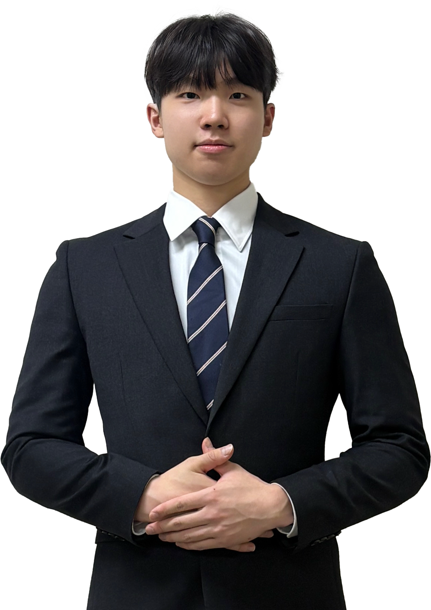
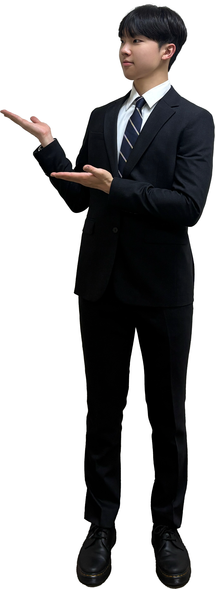

제 7대 인공지능융합대학 학생회 입후보
[영원]
기조
입후보자 약력
공약
투표 안내
제 7대 인공지능융합대학 학생회 입후보
영원
SCROLL
스쳐가는 찰나가
영원
히 기억될 순간으로
7TH ETERNITY

CANDIDATE PROFILE
인공지능융합대학 학생회장 입후보자
임명진
사이버보안 22
주요 약력 · PROFILE
2022
소프트웨어융합대학 컴퓨터소프트웨어학부 입학
2023
육군 제9보병사단 백마부대 신병교육대대 자원 입대
2025
육군 제9보병사단 백마부대 수색대대 병장 만기 전역
제 5대 'END:ING' 소프트웨어융합대학 학생회 기획국장 역임
제 5대 'END:ING' 소프트웨어융합대학X사회과학대학 신입생 환영행사 준비위원
제 5대 'END:ING' 소프트웨어융합대학 개강총회 준비위원
제 5대 'END:ING' 소프트웨어융합대학 풋살대회 '엔딩일레븐' 준비위원
제 5대 'END:ING' 소프트웨어융합대학X글로벌비즈니스대학 농촌봉사활동 준비위원
제 5대 'END:ING' 소프트웨어융합대학 중간고사 간식배부 준비위원
제 5대 'END:ING' 소프트웨어융합대학 단체잠바 제작 및 배부 준비위원
2026
제 6대 'E:UM' 소프트웨어융합대학 학생회 총괄위원장 역임
제 6대 'E:UM' 소프트웨어융합대학 신입생 환영행사 총괄위원장
제 6대 'E:UM' 소프트웨어융합대학 개강총회 총괄위원장
제 6대 'E:UM' 소프트웨어융합대학X공과대학 풋살대회 'D2일레븐' 준비위원
제 6대 'E:UM' 소프트웨어융합대학X음악공연예술대학 농촌봉사활동 총괄위원장
제 6대 'E:UM' 소프트웨어융합대학 1학기 기말고사 간식배부 총괄위원장
제 6대 'E:UM' 소프트웨어융합대학 2학기 중간고사 간식배부 총괄위원장
제 6대 'E:UM' 소프트웨어융합대학X공과대학 E-Sports대회 준비위원
CORE PLEDGES · 입후보 [영원]의 약속
영원을 만들어갈
11대 핵심 공약
01
타 단과대학 교류 확대
02
시험기간 간식 배부
03
인공지능융합대학 개강총회 진행
04
인공지능융합대학 MT 진행
05
인공지능융합대학 단합회 개최
06
인공지능융합대학 단체 봉사활동 진행
07
인공지능융합대학 E-Sports 대회 진행
08
인공지능융합대학 풋살대회 진행
09
인공지능융합대학 단대인의 밤 행사 진행
10
D2 작은도서관 전공서적 최신화 및 추가 구비
11
D5 작은도서관 개설

임명진
사이버보안 22 · 입후보자